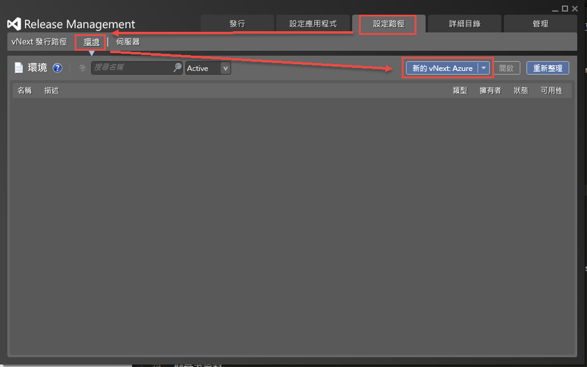
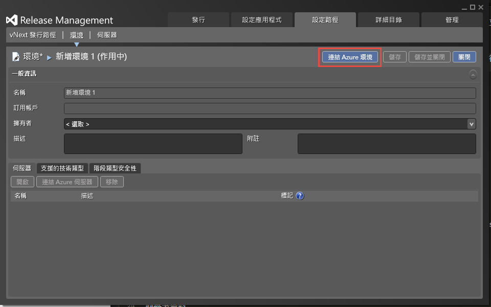
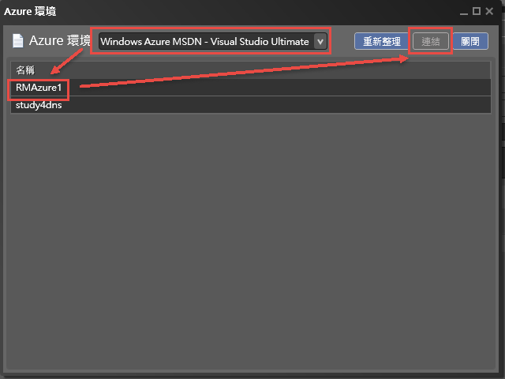
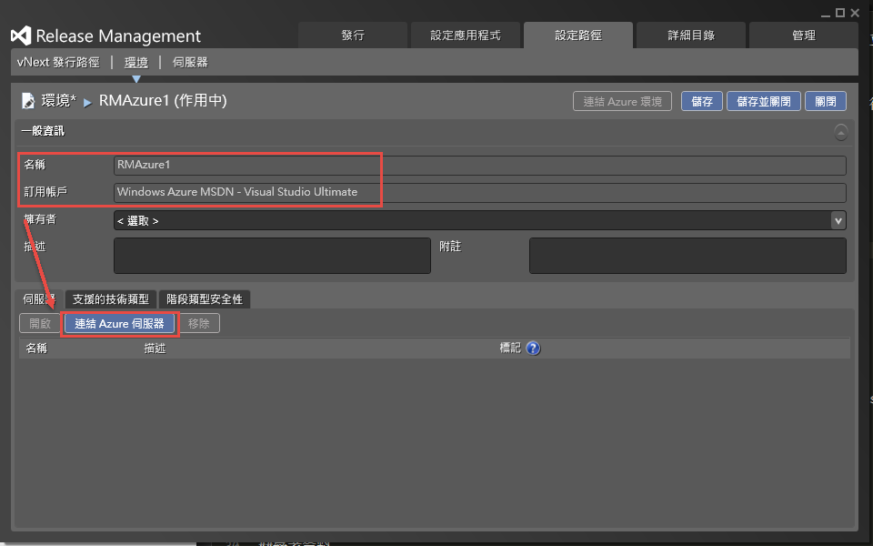
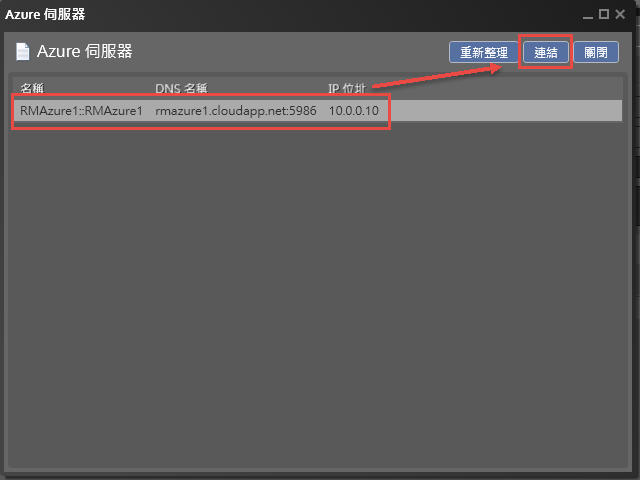
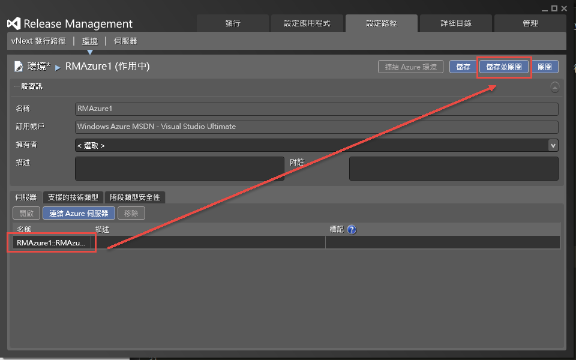
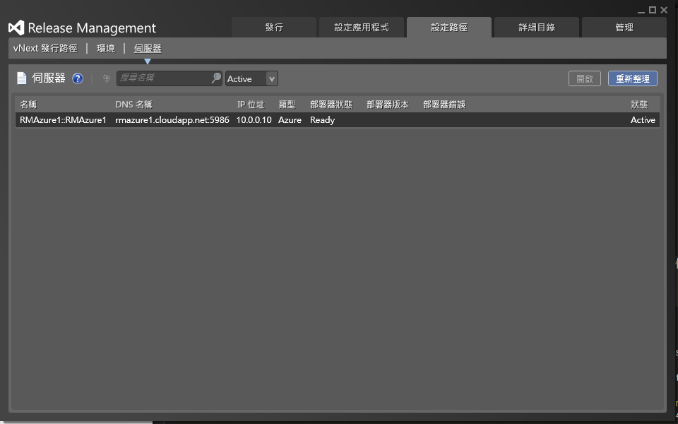
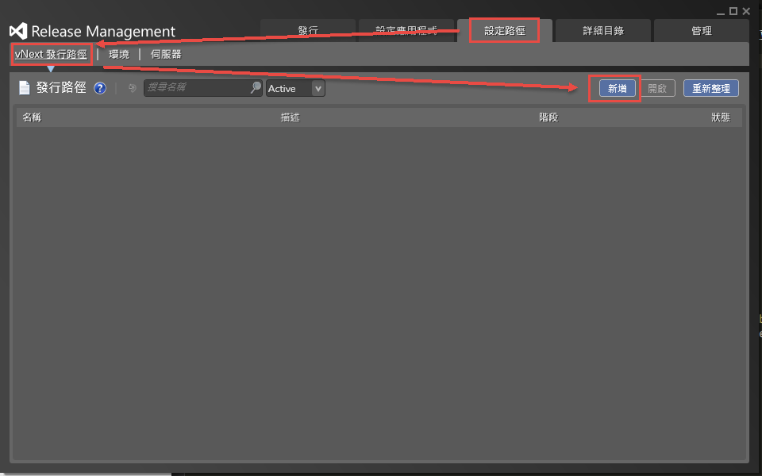
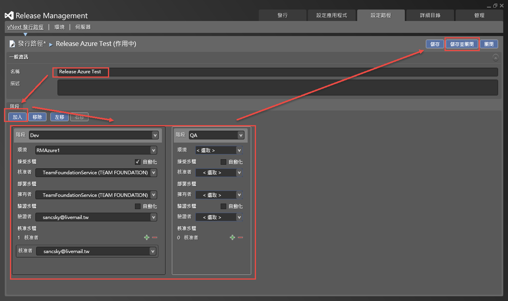
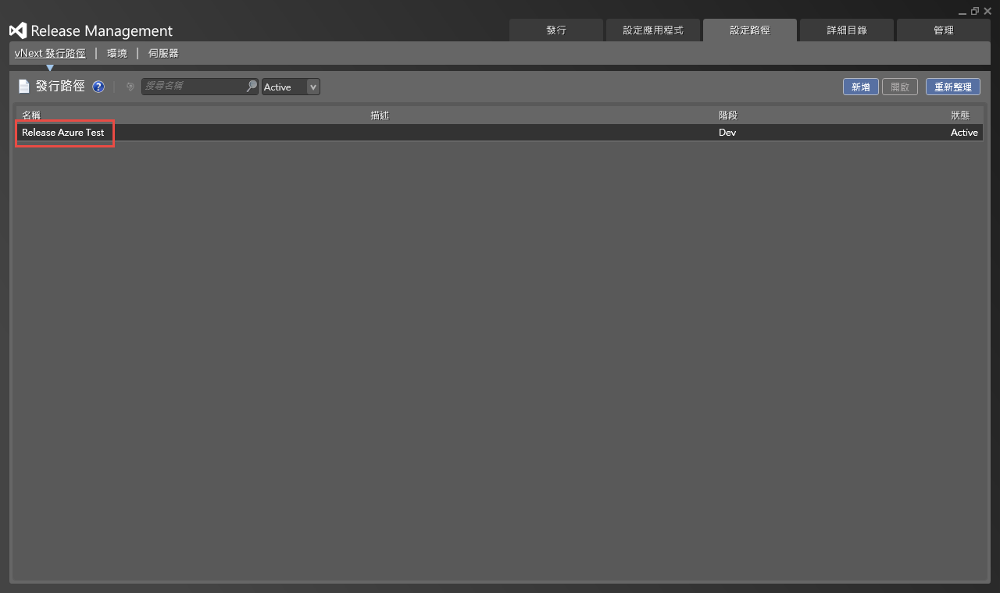

設定Release Managment 環境
完成了Release Management與Visual Studio Online與Azure的相關設定後，接下來，到”設定路徑” => “環境” 的地方來設定環境；我們這邊選擇”新的vNext Azure”。

接下來，按下”連結Azure環境”的按鈕，來取得Azure的相關資源。

於彈跳出來的視窗選擇Azure訂閱後，就可以搜尋到目前的VM群組。
( 這邊搜尋到的其實是”雲端服務”，而非獨立的一台VM，而在new Azure Portal 裡面，其實也看不到”雲端服務了”，所以這邊我們可以把它當成一個HA Group ( 可用性群組 )的角度來看待。 )

完成後，就可以看到如下圖，選擇的”環境(“雲端服務”)已經被帶進來了，接下來，按下”連結Azure伺服器”。

接著，從這邊選擇VM。

完成後，就可以按下儲存，結束這回合!

最後，我們就可以從伺服器的地方，看到我們選擇的VM。

另外，提醒大家一下，在正常的情況下，應該是從”伺服器”那邊開始設定，接著才會設定到”環境”，原因是因為一個環境底下，可能會有多個伺服器 ( 例如 Web 、 AP 、 DB Server)；但在Azure的設定下會剛好相反；其中一個原因是因為沒辦法從伺服器那邊選起，所以才只能從環境的地方開始設定起，而對Azure來說，一個環境，對應到的是一個”雲端服務”，所以選擇完雲端服務後，自然而然地就可以選擇到一個VM了。
接下來，我們要設定vNext發行路徑，如下圖。

這邊，我們可以先給一個名稱，然後於”階段”的地方，就可以加入每個佈署的過程，如下圖，可以看到dev和QA，表示會先進入dev的佈署，完成之後才會進入QA的佈署。
首先，我們先選擇”加入”，就可以選擇Dev，這邊要特別注意的是接受步驟旁的自動化，一定要打勾，不然到時候會不能儲存… ( 那為什麼還要讓我們勾勒… )
接受步驟表示的是Release Management會接受並觸發動作。
然後核准者和擁有者就選擇預設的Team Foundation Service就可以了，未來大家也可以自行的增加使用者或是群組，例如 RD Team之類的。
驗證步驟的地方，也有一個要勾選的，那邊如果勾選的話，就不會讓人稽核，直接就會開始進行下一關的佈署，而如果沒勾的話，就會需要驗證者的審核，Release Management才會開始進行下一關的佈署；所以這邊我就選擇我自己，當作佈署後的驗證。
而有的時候，可能不會只有一個人驗證，可能會有多個人驗證，所以在下方，還有個加號，可以讓更高階的主管認證；而這邊因為我沒有別的帳號，所以我還是選擇我自己。
最後，QA環境的意思和Dev環境的設定相同，大家可以設定自己想要的環境，但要注意的是，一個環境只能給一個階段使用，以下圖來說，RMAzure1已經被Dev的環境使用掉了，所以QA就不能再使用了RMAzure1了。
所以到時候，這篇文章會只使用Dev環境當作Demo。

完成後，就可以看到發行路徑已經建立好了。

基本上，Release Management的環境設定就到這邊。